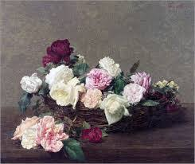
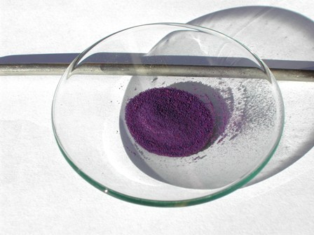

A Monet piacevano le ninfee, sicuro.

E gli piaceva pure il color violetto, che troviamo sempre, naturalmente ora più ora meno, nel suo coinvolgente impressionismo che da solo vale il viaggio al museo, dove che sia.
Sembra che Claude fosse anche grato a monsieur Jean Salvetat, il pressochè ignoto chimico francese che nel 1859 "inventò" il viola cobalto a base di fosfato, uno splendido pigmento che diventerà tanto prezioso per gli artisti di quel secolo, tanto da far affermare al nostro pittore che finalmente aveva trovato il colore dell'atmosfera.
Non so se nella famosa serie dei tramonti sul Parlamento di Londra abbia usato il viola "cobalto" di cui voglio parlare, ma sicuramente è possibile.
Gli originali viola cobalto ottocenteschi erano essenzialmente due: il fosfato Co3(PO4)2.nH2O e l'arseniato Co3(AsO4)2.nH2O, puro o con magnesio come co-metallo, le cui tonalità cromatiche variano dal lilla chiaro al viola scuro a seconda del grado di idratazione dei sali.
In pratica se nel sale neutro (consideriamo il fosfato) si passa da Co3(PO4)2.8H2O (octaidrato) a Co3(PO4)2.4H2O (tetraidrato) a Co3(PO4)2 (anidro) il colore passa dal lilla chiaro, al lavanda e fino al viola scuro.
Nelle ninfee di cui sopra sembra accertato che si trattasse di arseniato e non di fosfato; quest'ultimo si trova invece sicuramente nel "Cesto di fiori" di Fantin-Latour, alla National Gallery.

I pigmenti violetti non sono tanti, anche se in ogni caso il viola lo si può ottenere con l'opportuna mescolanza del blù e del rosso; tuttavia la sostanza ottenuta da Salvetat certo portò un notevole contributo alle materie prime a disposizione dei pittori del periodo romantico e successivi.
L'input per queste considerazioni me l'ha casualmente fornito un pannello sulla storia dei colori (col nome chimico!) nella mostra sul Post Impressionismo allestita nel palazzo della Gran Guardia a Verona.
Mi sono messo per un attimo e immodestamente nei panni di monsieur Salvetat e ho provato a sporcare un po' di provette, naturalmente di corsa perchè d'inverno nel mio lab fa un freddo cane.
Il pigmento lo si prepara precipitando il fosfato da un sale solubile di cobalto per mezzo di un fosfato alcalino.
Sono partito dal cloruro esaidrato CoCl2.6H2O e dal fosfato monopotassico KH2PO4, secondo la reazione:
3 CoCl2 + 2 KH2PO4 + 4 KOH -> 2 Co3(PO4)2 + 6 KCl + 4 H2O
In una prima fase ho salificato il KH2PO4 con KOH per ottenere il sale tripotassico controllando di non superare pH 12 (pH del sale dissociato) e poi ho aggiunto quest'ultimo alla soluzione di cloruro di cobalto, sempre tenendo conto delle rispettive quantità stechiometriche, che per semplicità questa volta ometto completamente.
Le quantità in gioco erano pochi grammi (dopo tutto non dovevo farci un quadro!)
Appena le soluzioni sono mescolate il fosfato neutro di cobalto, che è estremamente insolubile, precipita in color lilla e va lasciato sedimentare con calma.
In seguito decantare, lavare, filtrare ed essicare (quattro parole che a dirsi sono veloci ma che in pratica portano via parecchio tempo) fino ad ottenere una bella polverina rosa violetto di Co3(PO4)2.8H2O
(Mi sono accorto troppo tardi di non averla fotografata questa polverina... pazienza).
Per ottenere il pigmento di un colore viola deciso occorre ora disidratare progressivamente il prodotto scaldandolo finchè la tonalità di colore non cambia; ho scaldato sul bunsen in un crogiolo appena al rosso, indicativamente quindi a poco più di 600 gradi per qualche minuto.
Esasperando il riscaldamento, con altri mezzi, il colore scurirebbe sempre di più e probabilmente si arriverebbe fino al pirofosfato Co2P2O7, inutilizzabile perchè quasi nero.
Calcinando in altre condizioni di tempo e temperatura la tonalità sarebbe sicuramente un po' diversa, ed anche in questo sta la flessibilità di questi pigmenti.
Ecco il mio risultato, immortalato in un fortunato momento di piacevole sole invernale:

Il viola cobalto, pur essendo un pigmento chimicamente molto stabile, non ebbe la diffusione che meritava perchè privo di un grande potere coprente ed abbastanza costoso, talchè fu spesso in seguito sostituito dal più potente ed economico violetto di manganese, che è tuttavia un altro bellissimo colore, costituito da pirofosfato di ammonio e manganese.
E l'arseniato? Anche questo mi piacerebbe provar a fare (chissà se...).
Su di lui si può dire che nacque mezzo secolo prima del fosfato poichè lo si poteva ricavare dal raro minerale eritrite, grazie all'opera di Thenard (quello dell'altro famoso blù, CoAl2O4); ebbe vita più travagliata del fratello minore soprattutto per la sua forte tossicità, anche se una volta non si andava troppo per il sottile riguardo "insignificanti" particolari come questo.
Ai tempi di Thenard, di Salvetat e anche molto dopo, se c'erano topi che giravano per casa ci si recava semplicemente dallo speziale e si poteva ricevere quasi senza nessun problema un bel cartoccetto di As2O3, che i non chimici possono tranquillamente leggere come "arsenico".
Non so se mi spiego.
1 commenti